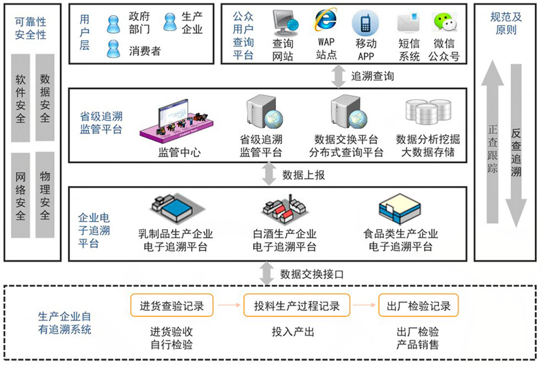

致力于产品追溯，智慧农业，食品安全领域和农产品电商领
的软件服务和系统
-
湖北省食药局重大活动保障集3G视频监控、现场抽样检测、数据汇总和分析功能于一体，为重大会议、运动会等大型集全活动提供安全保障。
-
湖北省产地准出管理湖北省产地准出信息管理系统主要功能包括产地自检、监督抽检、产地准出合格证授予等功能于一体的产地准出管理系统，
-
松滋市农业局综合服务平台检验检测系统、投入品监管系统、农产品质量安全追溯系统、畜禽屠宰场检验检疫和视频监控系统...
-
咸安区监管与追溯系统支持平台运行的中心端软硬件环境建设、中心端应用软件建设、公示终端建设、农资监管终端建设、追溯终端建设和视频监控终端建设。
-
大冶农产品质量安全追溯大冶市农产品质量安全追溯管理信息系统是集视频监控、大屏显示、检测联网、投入品监管与追溯于一体的综合性信息监管平台，
-
梁子湖区生态农业信息服务综合管理平台追溯、农资监管、安全监管、农业物联网于一体的生态农业信息服务综合管理平台，


- 农产品投入监管
- 解决方案>
- 首页>
- 当前位置:
-
农业投入品监管
为了打击假冒伪劣农资产品，特别是未经备案登记就销售或套用其它农药产品的备案登记号进行销售的行为，净化农资市场，掌握敏感农业投入品流向，政府监管部门需要对所有农资摊点进行信任评估，增设监管机制，建立登记备案制度。然而，在实际工作过程中，发现存在以下问题：
1）农资经销点分布范围比较广，靠人力巡查难度大，覆盖面窄。
2）如果采用Excel表格填写、通过电子邮件上报，能够解决一定的问题，但同样存在上报的数据需要人工汇总，而且真实性难以保证。
3）大部分农资经销点还采用手工记账方式，管理相对落后。
基于以上问题，为了进一步强化备案管理体系，提高工作效率，将农资经营销售的日常行为和监管将结合，建立农资实名制备案销售信息化管理系统，已经成为加强农资监管的重要管理手段。
监管模式
由于各区县农资经营销售门店多，分布范围分散，门店大小规模不一，在实际监管过程中存在着相当的难度。在使用信息化监管的过程中，由于农资店人员对信息系统的熟悉程序存在比较大的差异，造成系统难以推广和应用。我们在实际项目操作过程中不断总结，推出了批发商监管和零售商监管两种不同的监管模式。通过批发商管住产口入口，同时零售商自动从批发商处获取产品数据，减轻了零售商数据录入的压力。
批发商监管模式
由于相对来说，批发商规模大，人员素质相对较高，对信息化产品接受度高，因此从批发商入手，要求所有进入本区县的农资产品必须先在区县级平台上进行登记备案，包括产品案案登记、产品购销台账登记等。 零售商监管模式 零售商可以自动从批发商处获取进货产品的信息、进货产品的数量等内容，然后再进行备案销售。这在很大程序上减轻了零售商数据录入的压力，有利于系统进行应用推广，实现产品登记和入库的自动化。同时结合身份证识读器进行购买人身份信息自动录入，提高了销售登记的速度和真实性，同时对于农药销售提供了处方管理功能。 -
农产品质量溯源系统
随着人们食品安全意识的觉醒，人们对农产品安全的要求也越来越高，而要保证农产品生产的安全，向消费者提供真实可靠的农产品信息，自动识别技术在农产品安全上的应用已经是必不可少，自动识别技术已经陆续开始在农产品安全供应链上试点应用，并取得了不可替代的作用。响应国家加强食品监管的号召，遵循可追溯性是食品安全保障的基本原则，通过食品溯源实现食品的种植养殖、生产加工、包装运输以及批发零售的环节链条进行全程有效监管。
本系统利用RFID无线射频技术，针对农产品从生长到销售各环节的农产品质量安全数据进行及时采集上传，为消费者提供及时的农产品质量安全追溯查询服务，为客户提供有效的农产品质量安全监督管理机制和手段。
1、幼苗期：农产品质量安全追溯系统，与农业环境监控系统深度集成，在农作物长出幼苗后，选择有代表性的农作物（不低于3株），将电子标签挂在农作物幼苗上，并安装无线RFID读写设备，农业环境监控系统会定期（如每隔一周）将采集的环境数据通过RFID读写设备保存到电子标签中。
2、生长期：当操作员通过农业监控系统给农作物进行施肥、喷洒农药、灌溉操作时，系统会自动记录操作信息，并将该信息通过RFID读写设备主动发送给电子标签进行保存，同时系统支持线下作业的手动录入。
3、初加工：当农作物结果并成熟以后，操作员会对其进行初加工，加工人员通过RFID扫描设备自动记录下初加工的时间及操作人，保存到RFID电子标签中。
4、检测农药残留：进行初加工完毕后，检测人员会对蔬菜作物进行相应的农药残留检测（某批次随机抽样检测），检测后，检测员会把检测信息保存到该系统。
5、物流信息：当进行农作物蔬菜运送时，需要将RFID标签进行收回，并重置信息（重复使用），系统自动生成二维码，通过打印机打印后贴在该批次的农作物上，系统生成二维码的同时，自动将记录的生长环境数据、检测农药残留信息、初加工信息与该二维码自动绑定，物流信息系统管理员可以手工维护物流时间，同时也可以使用手机终端应用或扫描枪实现物流开始时间及达到时间的采集。
6、消费者扫描：生成的二维码被贴于蔬菜的包装，消费者可以通过手机二维码程序（通用）直接扫描，手机会显示该蔬菜的详细追溯信息，包括生长环境数据、检测农药残留信息等。
-
农业物联网智能控制方案
农业园区物联网智能控制方案，是通过无线传感器节点实时采集农作物生长所需的温室内的温度，湿度信号以及光照、土壤温度、土壤含水量、CO2浓度等环境参数，并通过一种低功耗自组网的短程无线通讯技术实现传感器数据的传输，所有数据汇集到中心节点，通过一个无线网关与互联网相连，利用手机或远程计算机可以实时掌握农作物现场的环境状态信息。户外现场布置摄像头等监控设备，实时采集视频信号。系统建成后，可实时监控各基地农业生产状况，与监控点实现在线交流，能及时发布生产指导、预警信息，指导基地农业生产，信息发布后基地在5分钟内可以正常接收并显示，可以通过计算机互联网、手机上网随时查询监控数据，发送部分环境因子调节指令。依据监测信息，开展分析研究，提出决策参考数据，提升农业部门服务农业生产经营管理水平，促进现代农业发展。
-
食品药品安全智慧监管系统
社会环境现状
毒胶囊事件、三聚氰胺事件、瘦肉精事件、上海染色馒头事件、三鹿奶粉事件…
根源：种养殖源头污染、食品加工工艺和卫生条件落后、流通储运手段达不到保鲜；供应链上的利益相关者出于私利或盈利目的…检测及法制不健全
1、食药安全事故频发，政府公信度下降，市场隐形问题凸显，公众关注度高
2、新形势下“先行先试”的创新性体制使得监管（监督）和服务成为主题，需要用信息化手段来支撑
3、云计算和物联网技术的发展和应用使得信息智能化成为可能
先进的监管体制
先行先试、统一、高效的食品药品
安全监管体制
有效解决“多龙治水”问题
科学系统的食品药品监管规范体系，企业自律和社会
目的
食品药品智慧监管平台将以云计算为基础，物联网为工具，监管应用为中心，实现食品药品安全的“风险评估、风险管理、风险交流”，实现科学监管，促进体制改革，创新监管模式，确保饮食用药安全。
以监管为手段，实现科学监管
以监管为纽带，促进体质改革
以监管为载体，创新监管模式
-
智能农业物联网监管系统
智能农业物联网监控系统可以实时远程获取温室大棚内部的空气温湿度、土壤水分温度、二氧化碳浓度、光照强度及视频图像、通过模型分析，自动控制温室湿帘风机、喷淋灌溉、内外遮阳、顶窗侧窗、加温补光等设备。同时，系统还可以通过手机、计算机等信息终端向管理者发送实时监测信息、报警信息，以实现温室大棚智能化远成管理，充分发挥物联网技术在设施农业生产中的作用，保证温室大棚内环境最适宜作物生长，实现精细化的管理，为作物的高产、优质、高效、生态、安全创造条件，帮助客户提高效率、降低成本、增加收益。
一、农业智能监测系统
通过物联网智能控制系统，对种植环境的空气温湿度、土壤温湿度、光照度、二氧化碳浓度等信息进行采集，对采集的数据进行分析，根据参数的变化实施调控或自动控制温控系统、灌溉系统等现场生产设备，保证农作物最优质的生长环境、促进农业生产的优质、高效、高产！二、视频监控系统
通过在农业生产区域内安装全方位高清摄像机置，对包括种植作物的生长情况、投入品使用情况、病虫害状况情况进行实时视频监控，实现现场无人职守情况下，种植者对作物生长状况的远程在线监控，农业专家远程在线病虫害作物图像信息获取，质量监督检验检疫部门及上级主管部门对生产过程的有效监督和及时干预，以及信息技术管理人员对现场数据信息和图像信息的获取、备份和分析处理。三、农业智能控制系统
通过物联网系统，可以对农业生产区域内各种设备运行条件进行设定，当采集的实时数据结果超出设定的阈值时，系统会自动通过继电器控制设备或模拟输出模块对温室大棚自动化设备进行控制操作，如自动喷洒系统、自动换气系统等，确保温室内为植物生长最适宜环境。四、监测预警系统
通过将监测点上环境传感器采集到的数据与作物适宜生长的环境数据相比较，当实时监测到的环境数据超出预警值时，系统自动进行预警提示，包括环境预警和病虫害预警，并提供相应的预警指导措施，进行手机和大屏幕显示设备推送。
五、监管平台及用户终端运行管理
用户可以通过区域管理，在全国详图中迅速定位所属站点，打开图标可显示站点的实时监测数据，可按照时间段查询和下载历史数据，通过曲线图，柱形图或饼状图进行数据展示和分析，建立大数据库，指导农业生产。 通过专家互动系统，可以对用户进行病虫害的远程分析指导，确保科学有效的管理生产。
用户可通过移动端和PC段，无线或在线实时监管农业物联网监控平台，进行系统的运行维护和管理。
- 软件
- 产品中心>
- 首页>
- 当前位置:


- 软件使用
- 技术服务>
- 首页>
- 当前位置:

-
软件使用
访问http://foodsafe.tainot.com进行产品试用。
-
软件开发服务
承接行业应用软件开发，包括B/S、C/S、单机版和移动App定制开发。
联系人： 王永波
联系电话：027-59760785-802 -
农业安防监控
通过现代化安防设备和系统监控确保安全。
-
技术咨询服务
提供行业软件开发咨询、售前售后技术服务等业务。
-
技术支持服务
常见问题解答
请直接联系客服人员,电话027-59760785
技术支持服务
技术支持：李亮 电话：027-59760785-801
- 成功案例
- 成功案例>
- 首页>
- 当前位置:
-
-
 湖北省食药局重大活动保障为湖北省食药局开发的重大活动保障管理信息系统，是集3G视频监控、现场抽样检测、数据汇总和分析功能于一体的省级重大活动保障平台，为重大会议、运动会等大型集全活动提供安全保障。
湖北省食药局重大活动保障为湖北省食药局开发的重大活动保障管理信息系统，是集3G视频监控、现场抽样检测、数据汇总和分析功能于一体的省级重大活动保障平台，为重大会议、运动会等大型集全活动提供安全保障。 -
湖北省产地准出管理湖北省产地准出信息管理系统主要功能包括产地自检、监督抽检、产地准出合格证授予等功能于一体的产地准出管理系统，主要使用单位是湖北省农产品质量安全检测中心和全省示范生产基地及合作社。
-
松滋市农业局综合服务平台松滋市农业信息综合服务平台建设内容包括七个部分，即检验检测系统、投入品监管系统、农产品质量安全追溯系统、畜禽屠宰场检验检疫和视频监控系统、农技推广系统、无害化处理和农业物联网。
-
咸安区监管与追溯系统整个平台建设内容包括支持平台运行的中心端软硬件环境建设、中心端应用软件建设（包括追溯软件、农资监管软件和视频服务端软件）、公示终端建设、农资监管终端建设、追溯终端建设和视频监控终端建设。
-
大冶农产品质量安全追溯大冶市农产品质量安全追溯管理信息系统是集视频监控、大屏显示、检测联网、投入品监管与追溯于一体的综合性信息监管平台，为大冶市申办省级农产品质量安全示范县的重点项目之一。
-
梁子湖区生态农业信息服务综合管理平台梁子湖区生态农业信息服务综合管理平台是集追溯、农资监管、安全监管、农业物联网于一体的生态农业信息服务综合管理平台，本平台由我公司中标并实施。
成功案例
-
- 软件下载
- 软件下载>
- 首页>
- 当前位置:

-
软件下载
检测数据采集助手通用版V2.8
- 关于我们
- 关于我们>
- 首页>
- 当前位置:

-
关于我们
湖北泰诺通科技有限公司成立于2015年7月，依托于湖北省农科院亚行技术援助项目农业信息服务平台（农事无忧）的第一版开发人员组建而成，是一家致力于产品追溯、智慧农业、食品安全领域和农产品电商领域的软件服务及系统集成服务商。公司在成立之后先后承接了湖北省食药局、武汉市食药局、湖北省农安办等省市级信息平台的开发，先后中标松滋市农业信息综合服务平台、咸宁市咸安区农产品质量安全追溯管理平台、大冶市农产品质量安全追溯管理平台、梁子湖区生态农业信息综合服务平台等区县级农产品质量安全示范县市创建项目。公司还承接了蔡甸区农资监管平台、鹤峰县农资监管平台、西安追溯信息系统的开发工作，与洪湖市农业局签订了农产品质量安全追溯平台的合作协议。
公司自成立以来，通过对对客户需求的把握、对产品质量的严格控制和良好的售后服务赢得了客户的信任。公司具有手机APP、B/S系统、桌面系统的研发能力，欢迎有需要定制软件或外包的客户联系我们。
-
招贤纳士
1、.net开发人员
2、平面设计及文案
3、销售人员 -
联系我们
湖北泰诺通科技有限公司
电话：027-87633376 027-59760785-802
邮箱：wyb716@dingtalk.com
传真：027-87633376
地址：武汉市洪山区佳园路光谷国际B座1816室